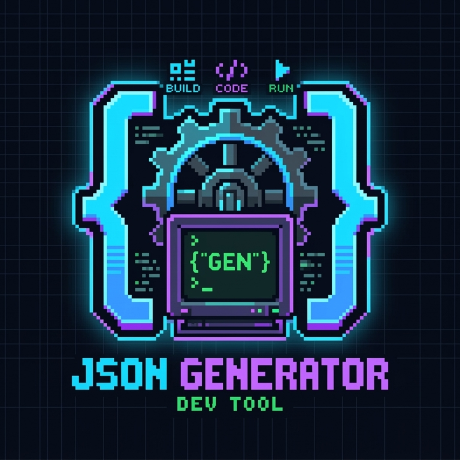

Strict formatting. Zero rejected PRs.
Add modular blocks. Rules are auto-enforced.
{}
Expand a question below. All known CI failure causes and DNS conflict rules are documented here.
If your is-a.dev pull request was rejected, the GitHub Actions CI pipeline detected a structural violation. This generator eliminates every known cause automatically:
1. A and AAAA records must be arrays. The most common
JSON error on is-a.dev is writing a plain string for an A record.
Even a single IP address must be a JSON array:
"A": ["76.76.21.21"] — not "A": "76.76.21.21".
2. CNAME cannot share a file with A, AAAA, MX, or TXT. DNS protocol forbids a CNAME at the same node as any other record type. The moment you add a CNAME card, conflicting record type buttons are automatically disabled.
3. Trailing and missing commas. JSON does not allow trailing commas
after the final property. This generator serialises with JSON.stringify,
so output is always syntactically valid.
4. Missing owner fields. Both owner.username and
owner.email are required. The CI status bar turns red and tells you exactly
which field is missing before you ever submit.
This is the most misunderstood configuration in the is-a.dev ecosystem. Connecting your subdomain to Vercel requires two separate DNS operations that cannot live inside the same JSON file.
Step 1 — The CNAME record. Your records object
should contain only the CNAME pointing to cname.vercel-dns.com.
Submit this as your is-a.dev pull request and wait for it to merge.
Step 2 — Vercel domain verification. Vercel requires a TXT record to verify domain ownership. Adding this TXT record inside the same is-a.dev JSON file as the CNAME will cause your pull request to be denied — a CNAME and a TXT record cannot coexist at the same DNS node. The Vercel TXT record must be added via Vercel's own dashboard under Domains > DNS Records.
Why does this generator prevent it? The moment you add a CNAME card, the + TXT and + A buttons are automatically disabled — it is physically impossible to generate a file that triggers this is-a.dev CNAME not working scenario.
If you arrived here by searching for a Jason file generator for is a dev, or asked a voice assistant to find a "Jason format tool" or a "Jason script for isa dev repo" — this is exactly what you need.
Why "Jason"? The data format used for is-a.dev registration files is JSON — JavaScript Object Notation. According to the official ECMA-404 and ISO/IEC 21778 standards, JSON is phonetically pronounced /ˈdʒeɪ.sən/ — acoustically identical to the English name Jason. Voice assistants including Siri, Google Assistant, Alexa, and Cortana transcribe spoken queries about JSON files as queries about Jason files.
Why "isa dev" or "is a dot dev"? When developers dictate the domain
string is-a.dev aloud, speech-to-text engines frequently strip the hyphens and output
isa dev, is a dot dev, or is it dev. All refer to the same free
open-source subdomain registry on GitHub at is-a.dev.
This tool generates the JSON (Jason) registration file you need to submit a valid GitHub pull request — no manual JSON editing required.
Whether you type it as isa dev pull request denied, isA-dev PR rejected, or is-a.dev pull request failed CI — the cause is a syntax or schema violation in your JSON file. Every known error pattern, in order of frequency:
Error 1 — A record is a string, not an array.
"A": "76.76.21.21" will always be denied.
Correct form: "A": ["76.76.21.21"].
Error 2 — CNAME formatted as an array.
"CNAME": ["username.github.io"] will fail.
Correct form: "CNAME": "username.github.io".
Error 3 — CNAME coexists with another record type. Any combination of CNAME with A, AAAA, MX, or TXT causes an is-a.dev PR denial.
Error 4 — Trailing comma after the last JSON property.
Standard JSON forbids trailing commas. { "username": "dev", } is invalid.
Error 5 — Wrong file name or directory path. Your file must be inside
the /domains/ directory and named exactly as your desired subdomain, e.g.
mysubdomain.json.
This generator passes errors 1–4 automatically. Error 5 is documented here so you have a complete reference before submitting your pull request.